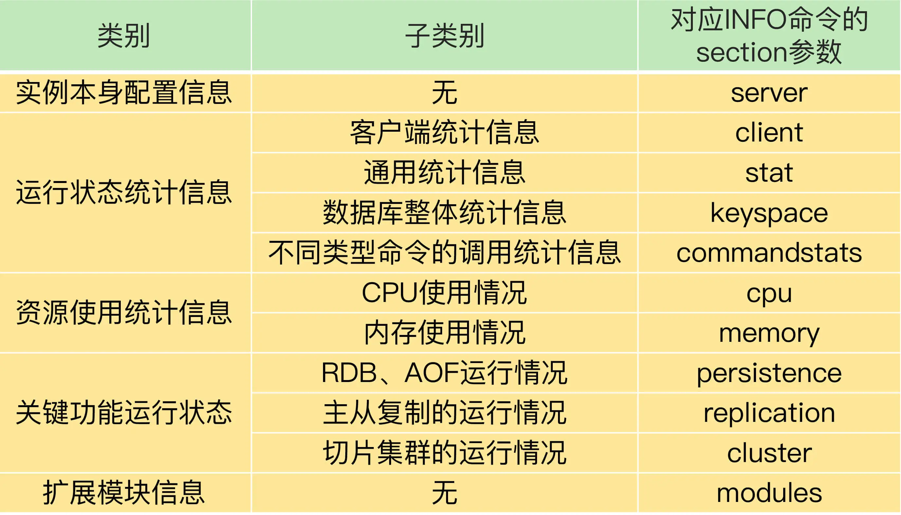
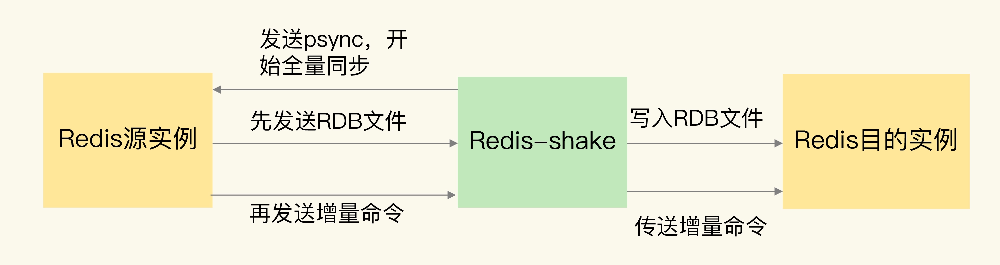

- 00 开篇词 这样学Redis，才能技高一筹.md
- 01 基本架构：一个键值数据库包含什么？.md
- 02 数据结构：快速的Redis有哪些慢操作？.md
- 03 高性能IO模型：为什么单线程Redis能那么快？.md
- 04 AOF日志：宕机了，Redis如何避免数据丢失？.md
- 05 内存快照：宕机后，Redis如何实现快速恢复？.md
- 06 数据同步：主从库如何实现数据一致？.md
- 07 哨兵机制：主库挂了，如何不间断服务？.md
- 08 哨兵集群：哨兵挂了，主从库还能切换吗？.md
- 09 切片集群：数据增多了，是该加内存还是加实例？.md
- 10 第1～9讲课后思考题答案及常见问题答疑.md
- 11 “万金油”的String，为什么不好用了？.md
- 12 有一亿个keys要统计，应该用哪种集合？.md
- 13 GEO是什么？还可以定义新的数据类型吗？.md
- 14 如何在Redis中保存时间序列数据？.md
- 15 消息队列的考验：Redis有哪些解决方案？.md
- 16 异步机制：如何避免单线程模型的阻塞？.md
- 17 为什么CPU结构也会影响Redis的性能？.md
- 18 波动的响应延迟：如何应对变慢的Redis？（上）.md
- 19 波动的响应延迟：如何应对变慢的Redis？（下）.md
- 20 删除数据后，为什么内存占用率还是很高？.md
- 21 缓冲区：一个可能引发“惨案”的地方.md
- 22 第11～21讲课后思考题答案及常见问题答疑.md
- 23 旁路缓存：Redis是如何工作的？.md
- 24 替换策略：缓存满了怎么办？.md
- 25 缓存异常（上）：如何解决缓存和数据库的数据不一致问题？.md
- 26 缓存异常（下）：如何解决缓存雪崩、击穿、穿透难题？.md
- 27 缓存被污染了，该怎么办？.md
- 28 Pika：如何基于SSD实现大容量Redis？.md
- 29 无锁的原子操作：Redis如何应对并发访问？.md
- 30 如何使用Redis实现分布式锁？.md
- 31 事务机制：Redis能实现ACID属性吗？.md
- 32 Redis主从同步与故障切换，有哪些坑？.md
- 33 脑裂：一次奇怪的数据丢失.md
- 34 第23~33讲课后思考题答案及常见问题答疑.md
- 35 Codis VS Redis Cluster：我该选择哪一个集群方案？.md
- 36 Redis支撑秒杀场景的关键技术和实践都有哪些？.md
- 37 数据分布优化：如何应对数据倾斜？.md
- 38 通信开销：限制Redis Cluster规模的关键因素.md
- 39 Redis 6.0的新特性：多线程、客户端缓存与安全.md
- 40 Redis的下一步：基于NVM内存的实践.md
- 41 第35～40讲课后思考题答案及常见问题答疑.md
- 加餐 01 经典的Redis学习资料有哪些？.md
- 加餐 02 用户Kaito：我是如何学习Redis的？.md
- 加餐 03 用户Kaito：我希望成为在压力中成长的人.md
- 加餐 04 Redis客户端如何与服务器端交换命令和数据？.md
- 加餐 05 Redis有哪些好用的运维工具？.md
- 加餐 06 Redis的使用规范小建议.md
- 加餐 07 从微博的Redis实践中，我们可以学到哪些经验？.md
- 结束语 从学习Redis到向Redis学习.md
加餐 05 Redis有哪些好用的运维工具？
今天的加餐，我来给你分享一些好用的 Redis 运维工具。
我们在应用 Redis 时，经常会面临的运维工作，包括 Redis 的运行状态监控，数据迁移，主从集群、切片集群的部署和运维。接下来，我就从这三个方面，给你介绍一些工具。我们先来学习下监控 Redis 实时运行状态的工具，这些工具都用到了 Redis 提供的一个监控命令：INFO。
最基本的监控命令：INFO 命令
Redis 本身提供的 INFO 命令会返回丰富的实例运行监控信息，这个命令是 Redis 监控工具的基础。
INFO 命令在使用时，可以带一个参数 section，这个参数的取值有好几种，相应的，INFO 命令也会返回不同类型的监控信息。我把 INFO 命令的返回信息分成 5 大类，其中，有的类别当中又包含了不同的监控内容，如下表所示：

在监控 Redis 运行状态时，INFO 命令返回的结果非常有用。如果你想了解 INFO 命令的所有参数返回结果的详细含义，可以查看 Redis官网的介绍。这里，我给你提几个运维时需要重点关注的参数以及它们的重要返回结果。
首先，无论你是运行单实例或是集群，我建议你重点关注一下 stat、commandstat、cpu 和 memory 这四个参数的返回结果，这里面包含了命令的执行情况（比如命令的执行次数和执行时间、命令使用的 CPU 资源），内存资源的使用情况（比如内存已使用量、内存碎片率），CPU 资源使用情况等，这可以帮助我们判断实例的运行状态和资源消耗情况。
另外，当你启用 RDB 或 AOF 功能时，你就需要重点关注下 persistence 参数的返回结果，你可以通过它查看到 RDB 或者 AOF 的执行情况。
如果你在使用主从集群，就要重点关注下 replication 参数的返回结果，这里面包含了主从同步的实时状态。
不过，INFO 命令只是提供了文本形式的监控结果，并没有可视化，所以，在实际应用中，我们还可以使用一些第三方开源工具，将 INFO 命令的返回结果可视化。接下来，我要讲的 Prometheus，就可以通过插件将 Redis 的统计结果可视化。
面向 Prometheus 的 Redis-exporter 监控
Prometheus是一套开源的系统监控报警框架。它的核心功能是从被监控系统中拉取监控数据，结合Grafana工具，进行可视化展示。而且，监控数据可以保存到时序数据库中，以便运维人员进行历史查询。同时，Prometheus 会检测系统的监控指标是否超过了预设的阈值，一旦超过阈值，Prometheus 就会触发报警。
对于系统的日常运维管理来说，这些功能是非常重要的。而 Prometheus 已经实现了使用这些功能的工具框架。我们只要能从被监控系统中获取到监控数据，就可以用 Prometheus 来实现运维监控。
Prometheus 正好提供了插件功能来实现对一个系统的监控，我们把插件称为 exporter，每一个 exporter 实际是一个采集监控数据的组件。exporter 采集的数据格式符合 Prometheus 的要求，Prometheus 获取这些数据后，就可以进行展示和保存了。
Redis-exporter就是用来监控 Redis 的，它将 INFO 命令监控到的运行状态和各种统计信息提供给 Prometheus，从而进行可视化展示和报警设置。目前，Redis-exporter 可以支持 Redis 2.0 至 6.0 版本，适用范围比较广。
除了获取 Redis 实例的运行状态，Redis-exporter 还可以监控键值对的大小和集合类型数据的元素个数，这个可以在运行 Redis-exporter 时，使用 check-keys 的命令行选项来实现。
此外，我们可以开发一个 Lua 脚本，定制化采集所需监控的数据。然后，我们使用 scripts 命令行选项，让 Redis-exporter 运行这个特定的脚本，从而可以满足业务层的多样化监控需求。
最后，我还想再给你分享两个小工具：redis-stat和Redis Live。跟 Redis-exporter 相比，这两个都是轻量级的监控工具。它们分别是用 Ruby 和 Python 开发的，也是将 INFO 命令提供的实例运行状态信息可视化展示。虽然这两个工具目前已经很少更新了，不过，如果你想自行开发 Redis 监控工具，它们都是不错的参考。
除了监控 Redis 的运行状态，还有一个常见的运维任务就是数据迁移。接下来，我们再来学习下数据迁移的工具。
数据迁移工具 Redis-shake
有时候，我们需要在不同的实例间迁移数据。目前，比较常用的一个数据迁移工具是Redis-shake，这是阿里云 Redis 和 MongoDB 团队开发的一个用于 Redis 数据同步的工具。
Redis-shake 的基本运行原理，是先启动 Redis-shake 进程，这个进程模拟了一个 Redis 实例。然后，Redis-shake 进程和数据迁出的源实例进行数据的全量同步。
这个过程和 Redis 主从实例的全量同步是类似的。
源实例相当于主库，Redis-shake 相当于从库，源实例先把 RDB 文件传输给 Redis-shake，Redis-shake 会把 RDB 文件发送给目的实例。接着，源实例会再把增量命令发送给 Redis-shake，Redis-shake 负责把这些增量命令再同步给目的实例。
下面这张图展示了 Redis-shake 进行数据迁移的过程：

Redis-shake 的一大优势，就是支持多种类型的迁移。
首先，它既支持单个实例间的数据迁移，也支持集群到集群间的数据迁移。
其次，有的 Redis 切片集群（例如 Codis）会使用 proxy 接收请求操作，Redis-shake 也同样支持和 proxy 进行数据迁移。
另外，因为 Redis-shake 是阿里云团队开发的，所以，除了支持开源的 Redis 版本以外，Redis-shake 还支持云下的 Redis 实例和云上的 Redis 实例进行迁移，可以帮助我们实现 Redis 服务上云的目标。
在数据迁移后，我们通常需要对比源实例和目的实例中的数据是否一致。如果有不一致的数据，我们需要把它们找出来，从目的实例中剔除，或者是再次迁移这些不一致的数据。
这里，我就要再给你介绍一个数据一致性比对的工具了，就是阿里云团队开发的Redis-full-check。
Redis-full-check 的工作原理很简单，就是对源实例和目的实例中的数据进行全量比对，从而完成数据校验。不过，为了降低数据校验的比对开销，Redis-full-check 采用了多轮比较的方法。
在第一轮校验时，Redis-full-check 会找出在源实例上的所有 key，然后从源实例和目的实例中把相应的值也都查找出来，进行比对。第一次比对后，redis-full-check 会把目的实例中和源实例不一致的数据，记录到 sqlite 数据库中。
从第二轮校验开始，Redis-full-check 只比较上一轮结束后记录在数据库中的不一致的数据。
为了避免对实例的正常请求处理造成影响，Redis-full-check 在每一轮比对结束后，会暂停一段时间。随着 Redis-shake 增量同步的进行，源实例和目的实例中的不一致数据也会逐步减少，所以，我们校验比对的轮数不用很多。
我们可以自己设置比对的轮数。具体的方法是，在运行 redis-full-check 命令时，把参数 comparetimes 的值设置为我们想要比对的轮数。
等到所有轮数都比对完成后，数据库中记录的数据就是源实例和目的实例最终的差异结果了。
这里有个地方需要注意下，Redis-full-check 提供了三种比对模式，我们可以通过 comparemode 参数进行设置。comparemode 参数有三种取值，含义如下：
- KeyOutline，只对比 key 值是否相等；
- ValueOutline，只对比 value 值的长度是否相等；
- FullValue，对比 key 值、value 长度、value 值是否相等。
我们在应用 Redis-full-check 时，可以根据业务对数据一致性程度的要求，选择相应的比对模式。如果一致性要求高，就把 comparemode 参数设置为 FullValue。
好了，最后，我再向你介绍一个用于 Redis 集群运维管理的工具 CacheCloud。
集群管理工具 CacheCloud
CacheCloud是搜狐开发的一个面向 Redis 运维管理的云平台，它实现了主从集群、哨兵集群和 Redis Cluster 的自动部署和管理，用户可以直接在平台的管理界面上进行操作。
针对常见的集群运维需求，CacheCloud 提供了 5 个运维操作。
- 下线实例：关闭实例以及实例相关的监控任务。
- 上线实例：重新启动已下线的实例，并进行监控。
- 添加从节点：在主从集群中给主节点添加一个从节点。
- 故障切换：手动完成 Redis Cluster 主从节点的故障转移。
- 配置管理：用户提交配置修改的工单后，管理员进行审核，并完成配置修改。
当然，作为运维管理平台，CacheCloud 除了提供运维操作以外，还提供了丰富的监控信息。
CacheCloud 不仅会收集 INFO 命令提供的实例实时运行状态信息，进行可视化展示，而且还会把实例运行状态信息保存下来，例如内存使用情况、客户端连接数、键值对数据量。这样一来，当 Redis 运行发生问题时，运维人员可以查询保存的历史记录，并结合当时的运行状态信息进行分析。
如果你希望有一个统一平台，把 Redis 实例管理相关的任务集中托管起来，CacheCloud 是一个不错的工具。
小结
这节课，我给你介绍了几种 Redis 的运维工具。
我们先了解了 Redis 的 INFO 命令，这个命令是监控工具的基础，监控工具都会基于 INFO 命令提供的信息进行二次加工。我们还学习了 3 种用来监控 Redis 实时运行状态的运维工具，分别是 Redis-exporter、redis-stat 和 Redis Live。
关于数据迁移，我们既可以使用 Redis-shake 工具，也可以通过 RDB 文件或是 AOF 文件进行迁移。
在运维 Redis 时，刚刚讲到的多款开源工具，已经可以满足我们的不少需求了。但是，有时候，不同业务线对 Redis 运维的需求可能并不一样，直接使用现成的开源工具可能无法满足全部需求，在这种情况下，建议你基于开源工具进行二次开发或是自研，从而更好地满足业务使用需求。
每课一问
按照惯例，我给你提个小问题：你在实际应用中还使用过什么好的运维工具吗？
欢迎在留言区写下你的思考和答案，我们一起交流讨论。如果你觉得今天的内容对你有所帮助，也欢迎你分享给你的朋友或同事。我们下节课见。
© 2019 - 2023 Liangliang Lee. Powered by gin and hexo-theme-book.